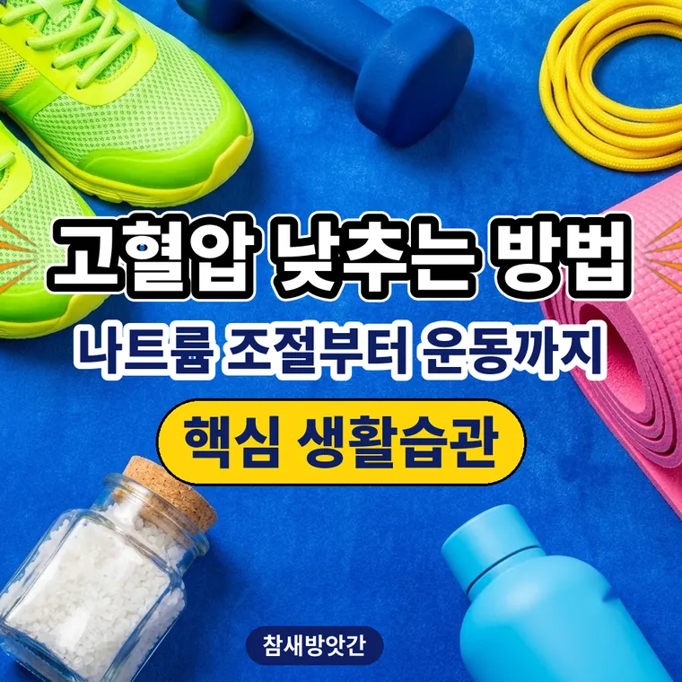

고혈압 낮추는 방법: 나트륨 조절부터 운동까지 핵심 생활습관 정리
혈압 관리의 기본은 하루 나트륨 2,000mg(소금 약 5g) 이하로 먹고, 주 150분 이상 중간 강도로 운동하는 것입니다. 학회가 권하는 생활습관을 정리했습니다.

혈압 관리는 매일 하는 습관에서 시작합니다
혈압이 높게 나왔다면 일상 습관을 한 번 돌아볼 때입니다. 고혈압이나 고혈압 전단계 관리는 한 번에 크게 하기보다 매일 이어갈 수 있는 습관을 만드는 것이 중심입니다.
이 글은 대한고혈압학회 등이 권하는 생활수칙을 쉽게 정리한 것으로, 진단이나 치료를 대신하지 않습니다.
나트륨은 하루 2,000mg 이하가 기준입니다
나트륨을 많이 먹으면 몸에 수분이 늘어 혈관 속 압력이 올라갈 수 있습니다. 하루 나트륨 기준은 2,000mg 이하이고, 소금으로 바꾸면 약 5g입니다.
한국인의 평균 나트륨 섭취량은 2018년 기준 3,255mg으로, 기준의 약 1.6배입니다.
| 나트륨 | 소금 환산 |
|---|---|
| 2,000mg(하루 기준) | 약 5g |
| 3,255mg(한국인 평균, 2018년) | 약 8.3g |
국물 요리는 국물을 남기고 건더기 위주로 드세요. 햄, 소시지, 라면, 젓갈 같은 짠 가공식품은 먹는 양을 줄이면 됩니다.
운동은 주 150분 이상, 중간 강도로
걷기, 자전거, 수영 같은 유산소 운동이 중심입니다. 강도는 약간 숨이 차지만 옆 사람과 대화는 되는 정도가 중간 강도입니다.
일주일에 150분 이상을 목표로 하면 주 5회, 한 번에 30분씩이 됩니다.
| 횟수 | 1회 시간 | 합계 |
|---|---|---|
| 주 5회 | 30분 | 150분 |
| 주 3회 | 50분 | 150분 |
체중도 건강한 범위로 유지합니다
과체중이나 비만이면 심장이 받는 부담이 커질 수 있습니다. BMI 계산기에 키와 몸무게를 넣어 내 체중이 어느 범위인지 가끔 확인해 보세요.
체중을 줄일 때는 한 번에 급하게 줄이기보다 식사와 운동으로 천천히 줄이는 쪽이 안전합니다.
술은 줄이고 담배는 끊습니다
술은 혈압을 올릴 수 있어 줄이는 것이 권고됩니다. 담배의 니코틴은 혈관을 수축시키므로 금연이 중요합니다.
구체적으로 얼마까지 마셔도 되는지는 몸 상태에 따라 다르니 의사와 상담하세요.
대한고혈압학회가 권하는 생활수칙
학회는 혈압 관리를 위해 다음을 권합니다.
싱겁게 먹기, 매일 30분 이상 운동하기, 적정 체중과 허리둘레 유지하기, 금연과 절주, 스트레스 줄이기, 정기적으로 혈압을 재고 의사 진찰 받기입니다.
이미 약을 먹고 있다면
고혈압 진단을 받고 약을 먹고 있다면 임의로 줄이거나 끊으면 안 됩니다. 반드시 담당 의사와 상담하세요.
자주 묻는 질문
고혈압 전단계라면 나트륨, 운동, 체중, 술과 담배 같은 생활습관을 점검해 보는 것이 좋습니다. 내 상태에 맞는 관리는 의사와 상담해서 정하세요.
갑자기 무거운 것을 들거나 숨을 참는 운동은 순간적으로 혈압을 올릴 수 있어 주의가 필요합니다. 걷기나 수영 같은 유산소 운동을 중심으로 하고, 어지럽거나 가슴이 답답하면 바로 멈추세요.
찌개나 국의 국물을 남기고 건더기 위주로 드시는 것만으로도 나트륨 섭취를 줄일 수 있습니다. 햄, 소시지, 라면, 젓갈 같은 가공식품을 줄이는 것도 방법입니다.
측정 30분 전에는 커피, 담배, 운동을 쉬세요. 혈압계 커프는 팔 위쪽에 감고, 다리를 꼬지 않은 편안한 자세로 재는 것이 좋습니다.